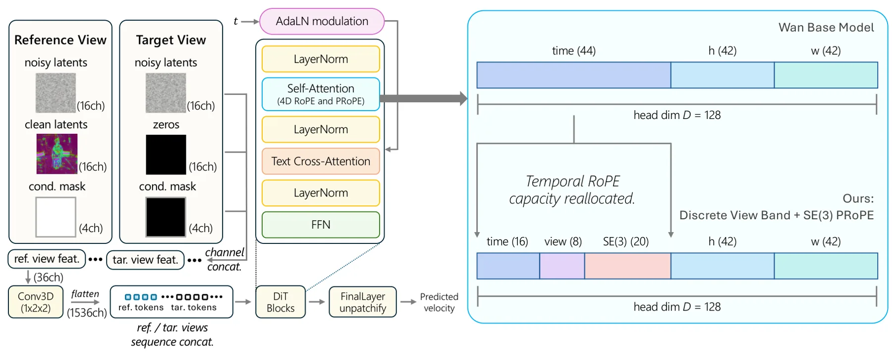
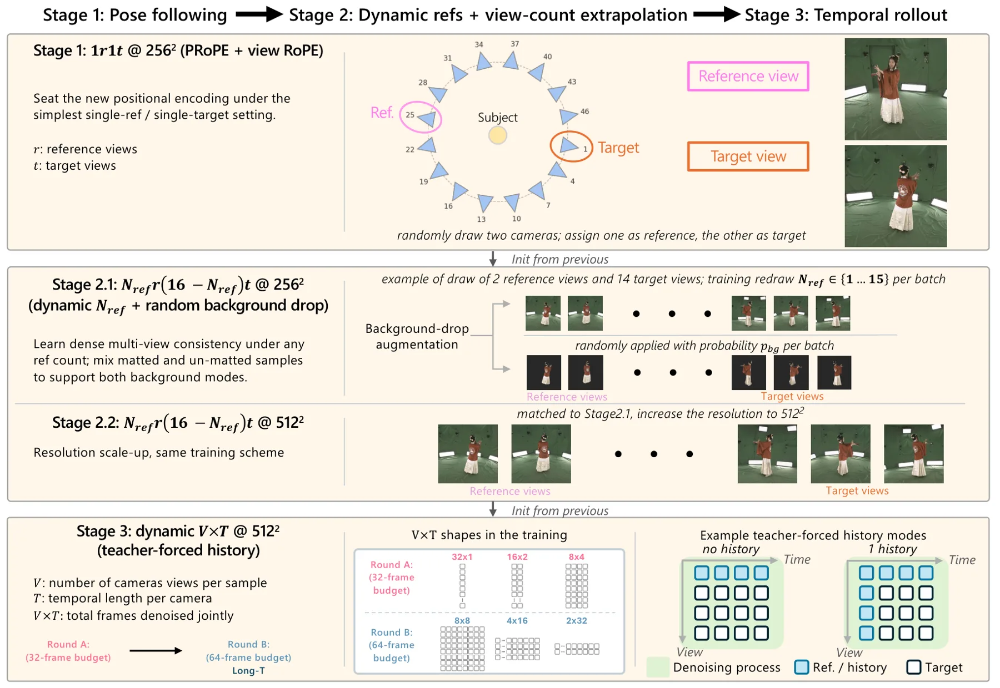
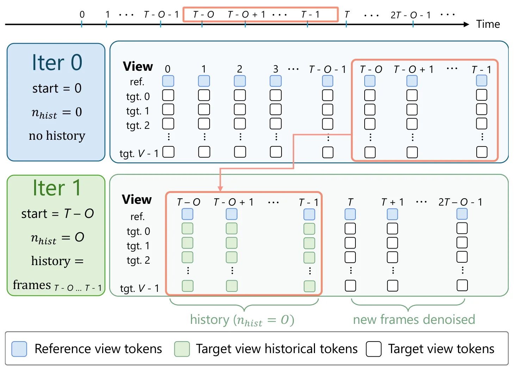
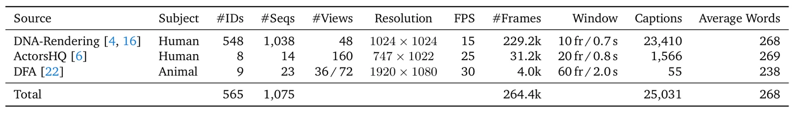

Flex4DHuman：灵活多视角视频扩散用于 4D 人体重建Flex4DHuman: Flexible Multi-view Video Diffusion for 4D Human Reconstruction
对动态 4DGS、AR/VR、仿真和人体/动物资产生成有价值；与 SLAM/GNSS 定位关系间接，重点应看位姿噪声容忍度和 4DGS 几何一致性。
一句话工作总结
Flex4DHuman 用相对相机位姿条件的视频扩散生成同步多视角视频，再接 4DGS 重建动态主体，降低了显式几何先验依赖。
摘要
本文提出 Flex4DHuman，一个多视角视频扩散模型，可将单目或稀疏多视角动态主体视频转换为同步 dense multi-view videos，并且只依赖相对相机位姿条件。不同于依赖骨架、深度、法线或目标视角几何渲染的人体方法，Flex4DHuman 不需要显式几何先验，而是通过相对相机位姿位置编码控制生成；生成视频可直接输入下游重建管线生成动态 4D Gaussian splats。方法基于 Wan 2.1 1.3B text-to-video 模型，保持 backbone 结构，通过五轴位置编码把时空 RoPE 扩展到 view index 和连续 SE(3) 相对相机几何，并用三阶段 curriculum 学习 pose following、灵活参考到目标视角生成和 temporal rollout。DNA-Rendering 与 ActorsHQ 实验显示其超过既有方法，混合人/动物训练后还可泛化到动物类别。
We present Flex4DHuman, a multi-view video diffusion model that transforms a monocular or sparse multi-view video of a dynamic subject into synchronized dense multi-view videos using only relative camera-pose conditioning. Unlike prior human-centric methods that rely on skeletons, depth maps, normals, or rendered target-view geometry, Flex4DHuman requires no explicit geometry priors and instead conditions generation through relative camera-pose positional encoding. The generated videos can be directly ingested by downstream reconstruction pipelines to create dynamic 4D Gaussian splats. Built on the Wan 2.1 1.3B text-to-video model, Flex4DHuman preserves the backbone architecture and encodes camera and view information through a five-axis positional encoding that extends spatio-temporal RoPE with view indices and continuous SE(3) relative camera geometry. A three-stage curriculum progressively trains the model for pose following, flexible reference-to-target view generation, and temporal rollout. To support temporal rollout, we train with clean historical target-view tokens. We also add multi-view captions to enable test-time text control. Combined with an off-the-shelf 4D Gaussian Splatting stage, our framework lifts monocular static-camera videos into dynamic 4D Gaussian splats. Experiments on DNA-Rendering and ActorsHQ show that Flex4DHuman surpasses prior state-of-the-art methods, while the same formulation generalizes to animal categories after mixed human-animal training. These capabilities make Flex4DHuman a practical step toward scalable 4D content creation from casual monocular videos for simulation, gaming, AR/VR, and video re-shooting.
中文解读摘录
- 作者：Siyu Zhou, Zhongliang Jiang；类别：cs.CV；发布日期：2026-06-11；采集 score=9
- 核心问题：partial-to-full 点云配准在重叠率变化、点密度波动和噪声存在时容易失稳；已有 Transformer 点云方法多偏全局上下文聚合，容易忽略建立精确对应所需的局部几何。
- 方法亮点：提出 GAPR-Net，采用 coarse-to-fine 框架，把卷积和 Transformer 模块结合起来，并通过 cross-attention 在局部/全局层面融合 partial 与 full 点云信息；核心是一个变换不变的 point-wise geometric feature，用相邻点相对几何描述单点局部结构。
- 结果信号：在胫骨、股骨、骨盆、胸椎软骨四类几何差异明显的骨骼数据上，registration recall 达到 94.2%，RMSE 为 1.992 mm，旋转和平移的 $R^2$ 分别为 0.908 和 0.974。
- 关注价值：直接命中点云配准，尤其适合关注低重叠、局部几何描述子和 partial observation 的研究者。局限是场景偏手术导航，代码需双盲评审后开放；后续应确认它在室外 LiDAR、稀疏/非均匀扫描和大尺度地图上的泛化性。
图表/页面预览

{kind=link}

{kind=link}

{kind=link}

{kind=link}
